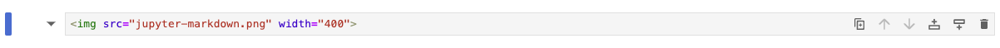

2 Basic Markdown Cell Formatting#
2.1 Basic Instructions#
Access Jupyter Notebook#
I recommend using the on-line tool to get started:
Select the default kernel displayed by clicking “Select”.
Read Code#
In the following we will see basic formatting tools that can be used in a markdown cell in Jupyter Notebook. In the following, I will use –> to direct to the syntax/code used to produce the output.
Execute Markdown Cell#
After entering the code into a markdown box (don’t include the –>), simply hit “Shift”+”Enter” together to execute the cell.
2.2 Markdown Cell vs. Code Cell#
We will be working with text formatting and therefore need a Markdown Cell. The default is a Code Cell. In the top navigation bar in your notebook, click on “Code” dropdown and choose “Markdown”. We are now ready to enter some code.
2.3 Creating Headers#
Headers are used to lead chapters and sections and are great tools to structure a document. The syntax is simple: use the hashtag followed by a break and then the chapter/section name. Try and type the following lines into your Markdown cell (do not include the –>), then execute by using “Shift”+”Enter”.
–> # MainHeader
–> ## SubHeader
–> ### SubsubHeader
–> #### SubsubsubHeader
Your screen should look like something this before executing
and after executing
Notice that we get a new default code cell after executing a cell.
2.4 Bold Text#
To type bold text, we can use asterisk symbol

2.5 Italic Text#
To type italic text, we can also use asterisk symbol
2.6 Bold and Italic Text#
To type both bold and italic text, we can still use asterisk symbol
2.7 Different Font and Text Color#
To my knowledge, Markdown does not allow for colored text. In this case, we can use HTML structures to make colored font as well as change font style.
2.8 Ordered List#
2.9 Bullet List#
2.10 Horizontal Line#
In Markdown, we can use
–> ***
or –> —
These lines are not very visible and allows very little control over them. Instead, HTML provides greater user control.
2.11 Inserting Images#
Adding Website Image - Example 1#
Adding Website Image - Example 2#
Adding File Image - Example 1#
You can simply drag and drop the image into the cell and it will write out the code for you, or you can type it out. Notice that the image will not appear unless the image file follows the Jupyter file.
Adding File Image - Example 2#
The above is a simple syntax used by Markdown, but it does not allow for size adjustments. As you can see, the image is relatively large. Instead, the HTML code allows for greater control:
A disadvantage of using the web browswer version is that I can’t display local file. Instead, I have inserted the output below.
2.12 Hyperlinks#
In Markdown, we can simple insert the link itself or use a similar approach as to inserting images.
2.13 Equations#
In-line Equations#
Separate Line Equation#
2.14 Tables#
2.15 Textcolored Boxes#
There are no way of doing this in Markdown syntax, but several ways of doing it in HTML. An easy approach is to use the alert class. It provides four different colors”